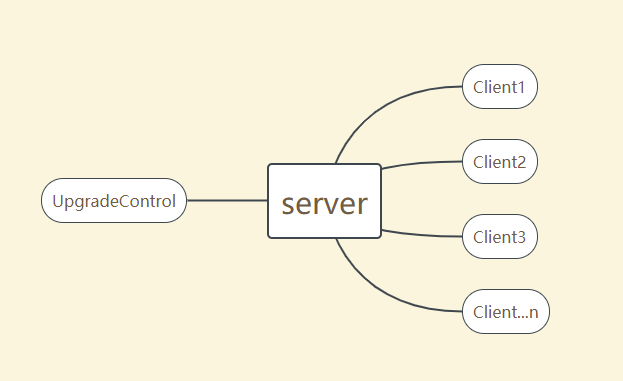
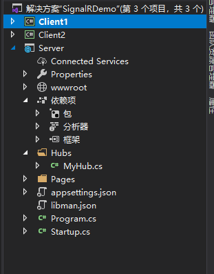
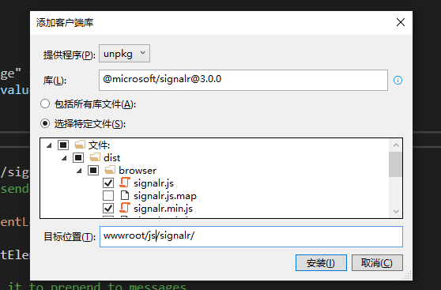
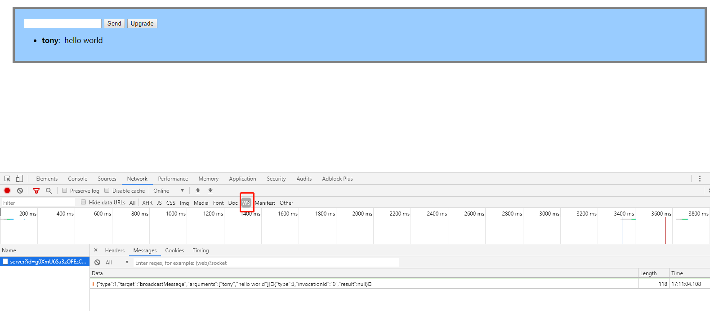
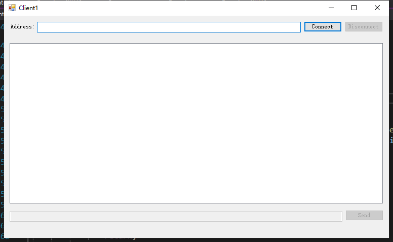
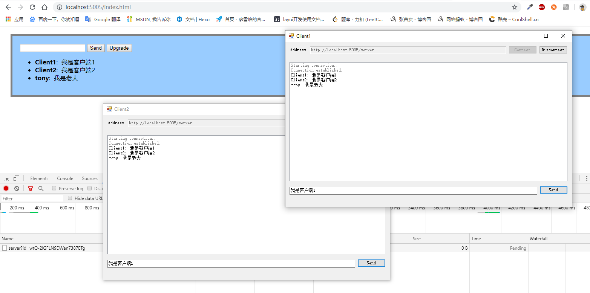
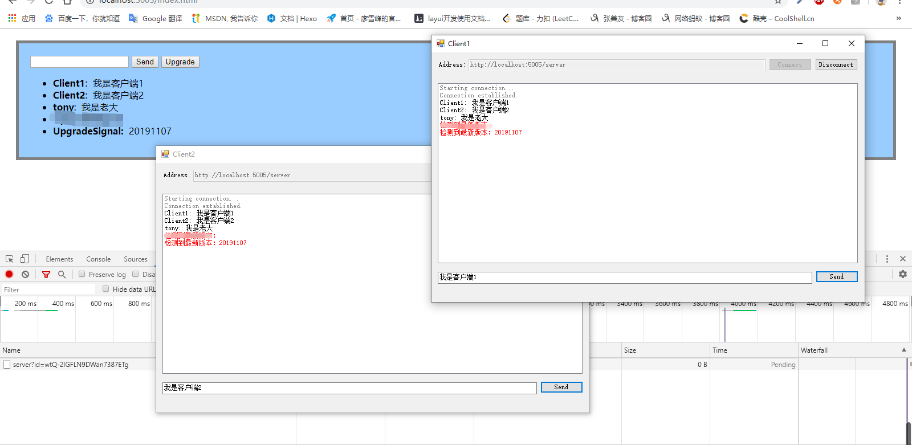

哈哈，我又来更博了~
最近公司的项目不多（额，其实是我手上的项目不多），相对清闲，所以更新的频率会高一些，近期在转型.net core，虽然不一定能马上用在公司现有的项目中，但这个知识的储备还是要抓紧进行的，毕竟.net core是今后c#语言的主要发展方向，也是微软在重回市值巅峰后，主推的一个技术栈，微软甚至成立了.net 基金会，令人惊奇的是目前基金会的管理成员均出自非微软的公司（包含谷歌，亚马逊，RedHat等），大力倡导.net开源计划，一些有名的技术大咖在个人博客和社交平台上更是不遗余力的推广，在国内比较著名的事件就是鹅厂的财付通平台（我们几乎每天都用到的微信支付），目前已经是采用.net core来支撑了，总而言之吧，.net core的生态圈在逐步甚至飞速的完善，虽然还达不到java那么繁荣，但其有后发优势，未来几年繁荣程度能和java比肩也并非不可能，将来，作为.net 程序员，想找到一份比较理想的工作，转型.net core是早晚要走的路。
好了扯远了，回到今天的主题，今天，来实现一个通过指令来完成winform桌面程序自动更新的功能。
先说下背景吧，8月份的时候，我去重庆出了个差，遇到了一个小问题，就是我们公司开发的人脸识别客户端，再激活sdk的时候出现了问题，紧急修复后，需要更新所有的终端程序，因为当时这个系统是用作入场检录的，整个场馆内有8个终端需要更新，场馆比较大，更新的话得拿着U盘，拿着键盘鼠标，跑遍整个场馆（我记得那个场馆差不多有1个半足球场那么大），因为这个终端程序已经在多个活动上使用且验证过了，所以基本上都不会出问题，也就没考虑过更新的问题，恰巧那次就出问题了，恰巧那次我就是那个拿着U盘跑遍场馆的人。。。我一直觉得，作为程序员，能用代码解决的问题，就别身体力行了！所以，今天就来分享一个集中更新所有客户端的解决方案。
先简单说下思路，因为检录终端本身是和场馆内的服务器相连的，也就是同在一个局域网下，那么客户端和服务端本来就可以进行双向通信，就可以利用类似广播的机制，由服务端发出指令，所有终端都能接收到该指令，然后完成指定的操作。

其实我前面的博客有写过一个Socket小工具（传送门:https://tony_df.gitee.io/hexo/2018/10/08/%E4%B8%80%E4%B8%AA%E7%AE%80%E5%8D%95%E7%9A%84socket%E5%B0%8F%E5%B7%A5%E5%85%B7/#more），也可以实现相关功能，但论简易和方便程度，SignalR是更优的解决方案，那么SignalR是什么，我就说一点，它是对多种抽象的通信传输协议的一个高级别的封装，让我们在完成客户端和服务端通信的时候，不用再考虑底层的实现，更多的去关注业务逻辑，由SignalR来帮我们选择合适的传输方式（长轮询，sse，websocekt）。这里也分享一篇介绍性的文章https://www.cnblogs.com/cgzl/p/9515516.html
来看下代码(结尾会分享该项目的完整代码地址)
项目结构为

先来创建Server端的项目，创建一个简单的web项目，然后引入客户端库

然后我们创建SignalR集线器服务使其集成Hub
1 | public class MyHub : Hub |
然后在StartUp中注册相关服务
1 | public void ConfigureServices(IServiceCollection services) |
接着在wwwroot目录下或者Pages文件夹下创建html文件或者视图文件，都可以，我这里创建的html，关键部分为
1 | document.addEventListener('DOMContentLoaded', function () { |
这段代码和微软教程里的代码基本一致，我稍微做了点小小的改动，至此，服务端的工作就基本完成了，我们可以调试一下看下效果

我们看到，这里SignalR帮我们在浏览器和服务端之间选择了websocket协议。
接下来，我们创建两个客户端，Client1和Client2
然后，我们做一个简单的界面，如下

界面上并没有请求更新的按钮，因为我们接下来要通过服务端的广播功能，来完成更新操作
客户端的关键代码是要在建立连接时监听服务端的相关操作，
1 | private async void connectButton_Click(object sender, EventArgs e) |
至此，服务端通过广播的形式完成客户端的更新流程就基本完成了，winform的更新代码我没写，这个我觉得不用写了，方法很多，只要我们和服务端的双向通信完成，更新就是具体的业务逻辑了。我之前的做法是，增加一个辅助程序用来进行升级，当主进程发起升级请求时，启动辅助程序，然后主进程退出，辅助程序进行新版本的自动下载，解压，完成后启动主程序，然后辅助程序自行退出，就完成了整体的升级操作。代码我就不灌了，我的方法也不一定是最好的，这一步大家就用自己拿手的方法就行。
看下效果


至此，我们就完成了服务端通过广播，主动的让局域网内所有客户端都自动更新的操作。再也不用跑遍全场了，哈哈。
在啰嗦几句，及时，SignalR作为实时工具库，其所提供的便捷的实时通信能力，可以在很多场景发挥作用，最常用的场景可能就是实时通信了，比如我们的网站或者app或者其他什么终端系统，需要客服的功能，用SignalR就可以提供非常完美的服务支撑，而且，这个工具是多语言支持的，不只是c#，java，Python，rust，node，JavaScript等这些主流的开发语言都支持。
完整代码地址：https://gitee.com/Tony_df/SignalRDemo.git